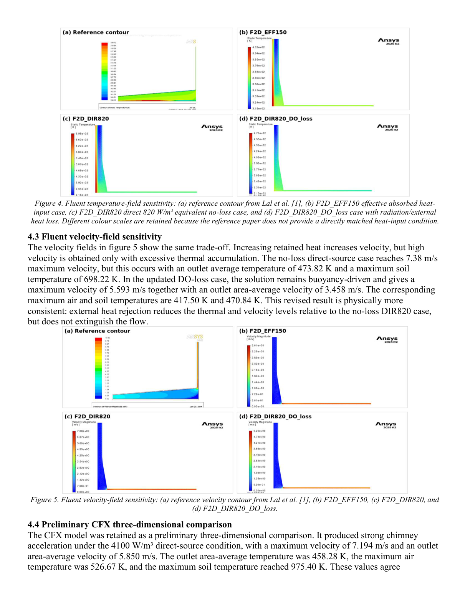

CFD and heat transfer
Solar Chimney Thermal-Fluid Simulation & Validation
A controlled CFD validation case study for a laboratory-scale solar chimney, focused on natural convection, conjugate heat transfer, boundary-condition uncertainty and physical validation.
Engineering Snapshot
Set up the thermal-flow model and checked whether the boundary conditions made physical sense.
Solver comparison, heat/mass balance checks, mesh sensitivity and result interpretation.
Conjugate heat transfer, ideal-gas air, coupled walls and buoyancy-driven flow.
Audited heat input instead of tuning the model to match a target value.
Good evidence for CFD reasoning; physical validation would need better measured boundary data.
Best used for roles needing model credibility checks and engineering judgement.

Engineering Capability Shown
- Defined a conjugate heat-transfer CFD model with air, absorber and transparent cover domains instead of treating heat input as a black-box setting.
- Audited energy input and rejected a direct solar-loading setup after heat accounting showed it was not physically credible.
- Used mesh independence, mass balance, heat balance, Reynolds/Rayleigh-number checks and buoyancy scaling as validation tools.
- Compared Fluent and CFX behaviour under controlled assumptions and explained the limits of point-value validation when boundary data is incomplete.
Verification & Limits
Checks Used
- Checked mass balance and heat balance before accepting the velocity and temperature contours.
- Used mesh-sensitivity checks and dimensionless-number estimates to test whether the simulated buoyancy behaviour was plausible.
- Compared Fluent and CFX behaviour under controlled assumptions, then treated disagreement as a modelling clue rather than hiding it.
- Audited heat input and rejected non-physical boundary settings instead of tuning the case only to match a target point.